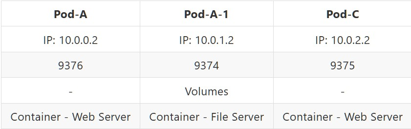
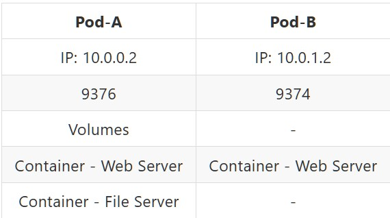
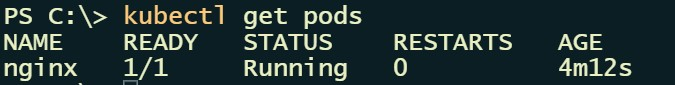
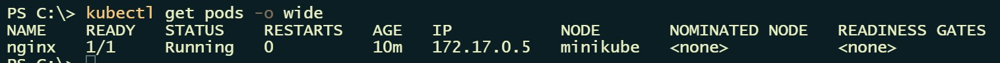
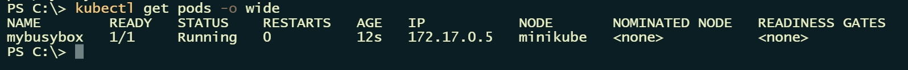
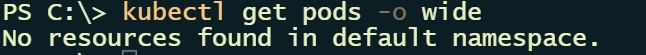

Kubernetes - Pod基本概念操作
2023-08-27 12:20:00
2023-08-27 12:20:00
Pod是Kubernetes中附屬於Node節點，也是整體架構最基礎底層單位，它負責運行我們熟知容器(Container)，一個Pod可運載多個容器裡面也有共用資源(Volumes、NetWork)，整個Pod內部容器都都是共享這些資源，有共享檔案空間就使用Volumes，在NetWork方面Pod會有一組IP和Port作為代表，針對不同Pod之間容器溝通，就是使用這些IP和Port進行溝通。
運行實例種類
Pod我們所知可以運作單個或多個容器，所以在Pod內部容器規劃可以分成以下
- 單個容器Pod
- 一個Pod只運作一個容器，將Pod視為服務容器個體，而不是容器運作環境。
- 目前最常見規劃使用方式，在管理面上是針對Pod而不是容器，因容器是由Pod驅使運作，只要Pod實體建置起來，服務基本上就隨著建置完成而開始運行。
- 多個容器Pod
- 一個Pod內運作多個容器，將Pod視為運作容器基底環。
通常會由Pod Template和工作附載控制器(Ex：Deployment)搭配，管理設置整體服務運作。
Workload resources for managing pods
Pod規劃還是需要按照實際需求做設計，依據官方文件說明，Pod除了可執行多個容器之外，也有設計Pod只單獨運行一個容器，也就是Pod即是容器概念，這是普遍最常見規劃方式，除非你的容器應用之間有緊密耦合關係，才有可能使用Pod內有多個容器這種進階規劃。
假設有兩個服務分別是A和B，各服務所需應用組成如下：
- A服務是一個檔案存取下載服務
- Web Server
- File Storge
- File Server
- B服務是一個單純資訊查詢服務
- Web Server
依照上述，在同一個Node節點情況下，兩種規劃建置各自如下：
單個容器Pod
我們將需要用到應用服務視為獨立個體，A服務會有兩個獨立個體來滿足需求，B服務只需要一個獨立個體滿足需求。
A服務規劃上會有兩個Pod進行，Pod-A是Web應用服務，Pod-A-1是一個檔案存取功能，檔案存放使用該Pod內部Volume進行檔案存放。

每個Pod都會有獨立NetWork IP和Port，讓Pod與Pod之間能進行溝通，當User使用A服務存取檔案時，Pod-A透過Pod-A-1NetWork IP和Port去發送存取檔案請求。
B服務規劃上只有單獨Pod進行，由Pod-B來滿足服務需求。
多個容器Pod
Node裡面Pod分別是Pod-A和Pod-B，各自內容容器結構如下：

我們可以將Pod視為一個服務相關應用集合體，針對A服務對應Pod-A，因為是一個檔案存取功能，所以組成除了Web Server之外，檔案存放使用Pod內部Volume進行檔案存放，搭配一個File Server提供檔案管理介面，整體組成才會形成一個完整服務，對於B服務對應Pod-B，它只是單純資訊查詢瀏覽服務，所以只需一個Web Server就可組成完整服務。
Pod 簡易操作 - 查詢
搭配kubectl get指令來查詢當前Pod運作清單。
關於指令詳細可參考：
https://kubernetes.io/docs/reference/generated/kubectl/kubectl-commands#get
基本查詢
kubectl get pods

加入-o wide參數可以在額外增加顯示資訊
kubectl get pods -o wide

假設想將Name為mybusyboxPod輸出其Yaml配置內容在本地，Yaml配置檔為mybusybox.yaml
kubectl get pod mybusybox -o yaml > mybusybox.yaml
關於-o 參數詳細可參考：
https://kubernetes.io/docs/reference/kubectl/#output-options
Pod 簡易操作 - 建置
Pod的建立有兩種操作方式
- Imperative commands，直接透過指令方式即時生成。
- Declarative commands，一樣透過指令方式生成，但是還需搭配Yaml配置檔聲明如何建置。
使用minikube單節點進行範例實作。
https://minikube.sigs.k8s.io/docs/
Imperative command
搭配kubectl run指令來建立Pod運行。
關於指令詳細可參考
https://kubernetes.io/docs/reference/generated/kubectl/kubectl-commands#run
執行指令建立Pod
kubectl run mybusybox --image=busybox --command -- bin/sh -c "sleep 100000"
--image指定使用哪種image建置容器--command設置當容器運行啟動內部需執行指令
透過以下指令可在終端機查看Pod清單
kubectl get pods -o wide`

Declarative command
搭配kubectl create指令和Yaml配置檔建立Pod運行。
關於指令詳細可參考 https://kubernetes.io/docs/reference/generated/kubectl/kubectl-commands#create
Yaml配置檔使用官方教材範例 - Pod templates
Yaml檔案內容：
# 定義版本
apiVersion: v1
# 定義此為Pod設定檔
kind: Pod
metadata:
# 定義此Pod Name
name: nginx
spec:
# 設定容器
containers:
# 使用Nginx容器
- name: nginx
image: nginx:1.14.2
ports:
- containerPort: 80
執行指令建立Pod，Yaml配置檔來源為網路
kubectl create -f https://k8s.io/examples/pods/simple-pod.yaml
OR
執行指令建立Pod，Yaml配置檔來源為本地
kubectl create -f ./MyFirstPod.yaml
透過以下指令可在終端機查看Pod清單
kubectl get pods -o wide`
minikube Dashboard 管理介面

Pod 簡易操作 - 刪除
搭配kubectl delete指令來刪除特定運行中Pod。
關於指令詳細可參考：
https://kubernetes.io/docs/reference/generated/kubectl/kubectl-commands#delete
假設要刪除Name為nginx的Pod
執行指令刪除Pod
kubectl delete pod nginx
透過kubectl get pods來確認
